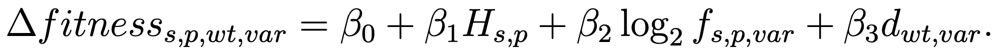

That is, for a substitution from residue wt to residue var at position p in sequence s,
We use ordinary least squares regression to infer the coefficients using the variant fitness scores from the datasets below, along with the computed substitution matrix and the homologous sequences found for each protein using blastp.
Once fitted, the model can be applied to any variant in a query protein by finding homologs, computing the relevant position’s Shannon entropy and the frequency of the variant at that position, and combining those with the appropriate substitution matrix element.
Within each selected dataset, the fitness values for all variants are rank-normalized since fitness metrics are dependent on experimental design. For this reason, datasets were included only from DMS studies that measured all or nearly all possible amino acid substitutions in a protein so that rank-normalized scores had a consistent interpretation across proteins. The measure of fitness must also be related to the protein’s function, which excludes, for example, studies that measured the protein’s evasion of a host’s immune system. In cases where multiple datasets cover the same protein, the datasets were merged by averaging normalized fitness scores for the same variant.
Download this table Download all datasets (Or, download individually from the table below.)